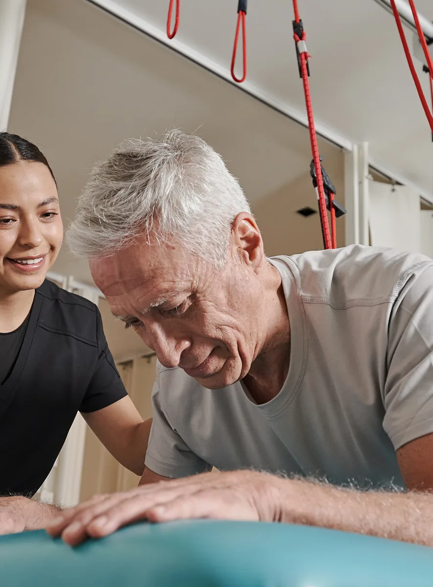
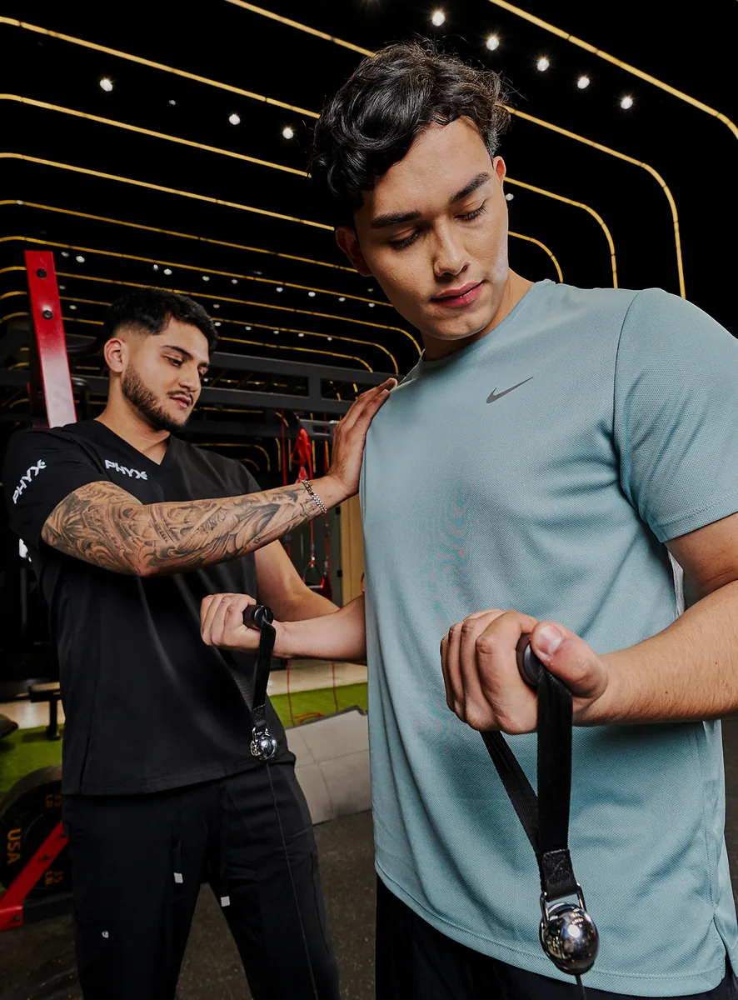
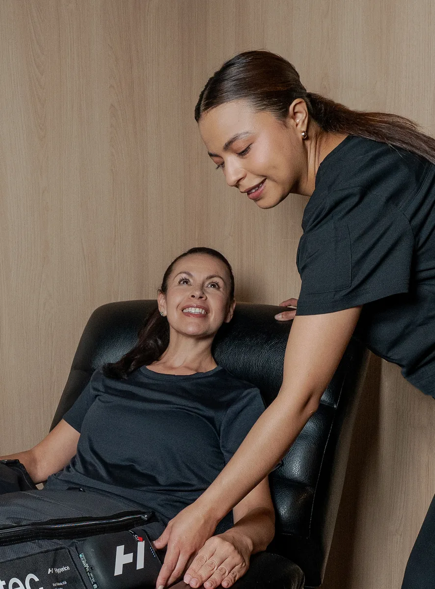
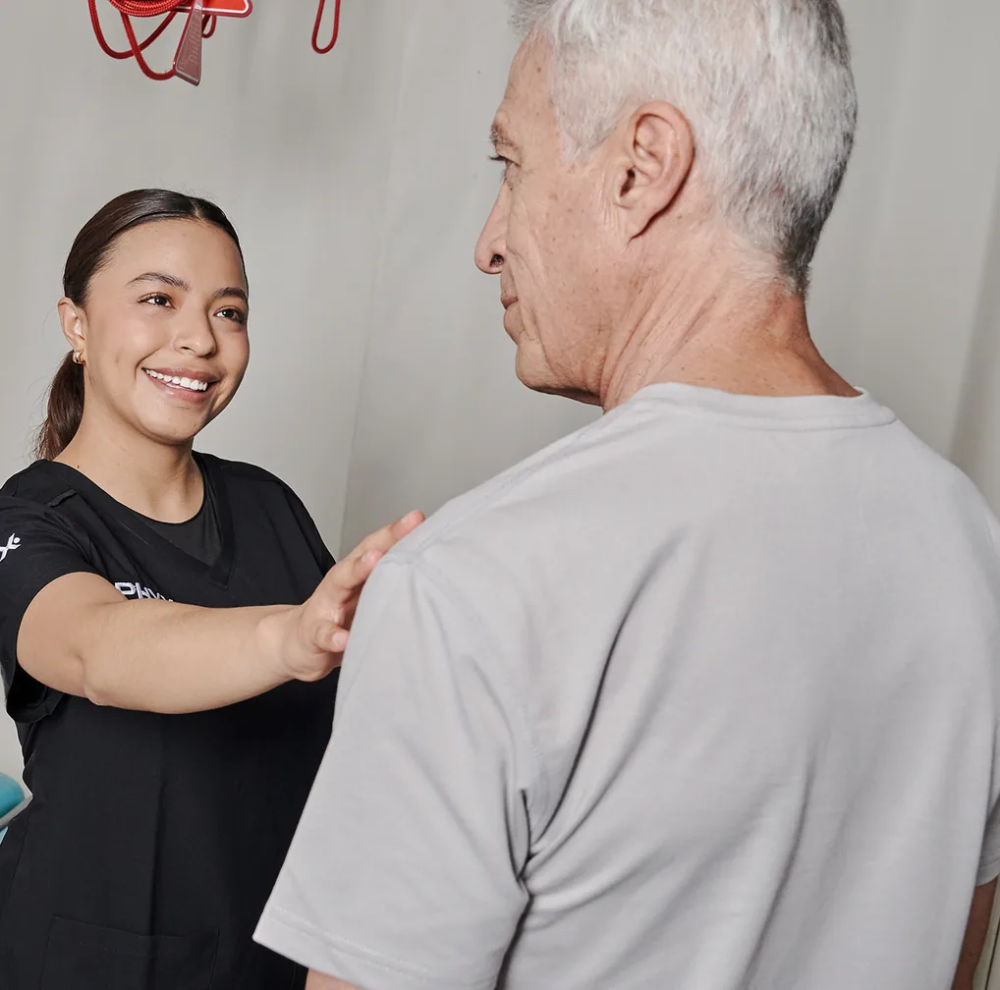

Rehabilitación
Valoración y un plan de fisioterapia con tecnología, del dolor agudo a tu rutina de siempre
Conoce RehabilitaciónFisioterapeutas, ortopedistas y nutriólogos con tecnología de rehabilitación en Lindavista, Las Américas y Ecatepec
Ver videoTecnología

Valoración y un plan de fisioterapia con tecnología, del dolor agudo a tu rutina de siempre
Conoce Rehabilitación
Entrenamiento guiado de fuerza, equilibrio y movilidad, también para adultos mayores
Ver membresías
Cámara hiperbárica, sauna, contraste y presoterapia en Las Américas, siempre con guía
Conoce Recovery ZoneVas al gimnasio, pruebas ejercicios que viste en internet, tomas algo para el dolor y cambias de consultorio. Nada se conecta. Casi nadie se queda a medias por falta de ganas: se queda a medias porque nadie le explicó cuál es el siguiente paso
En PHYX unimos valoración, tecnología y especialistas en un solo plan, con un fisioterapeuta que te acompaña sesión a sesión. Primero valoramos, luego actuamos, y medimos tu avance para que siempre sepas qué sigue
Te duele, te operaron o quieres rendir más. Todo empieza igual: entender tu cuerpo. Trabajamos en un ciclo continuo de valoración, tecnología, especialistas y seguimiento para que cada sesión te acerque a lo que quieres volver a hacer

“Entreno tres veces por semana con mi fisio. Ya subo escaleras sin agarrarme y mis hijos notan el cambio”Leer la historia
Cuéntanos a quién quieres ayudar y qué te gustaría lograr. Te conectamos con el especialista PHYX indicado para dar el siguiente paso